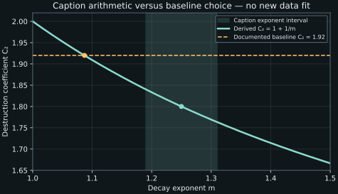

11. Constructing \(k\)–\(\epsilon\) and testing calibration
A formula for eddy viscosity is only one part of a turbulence model. If viscosity depends on turbulent energy and its destruction rate, both fields need evolution laws. The energy equation starts from an exact balance and closes selected terms. The familiar destruction-rate equation is a more substantial modeled reduction. Its coefficients must be read together with the calibration assumptions, rather than treated as consequences of dimensional analysis.
Lessons 32–35 construct the two transport equations and begin calibration of \(C_\mu\) and \(C_{\epsilon2}\). Rough-wall transport and non-equilibrium energy budgets motivate caution. The captions' decay exponent and reported coefficient are arithmetically inconsistent; the distinction between the derived relation, the caption values and a documented baseline coefficient is preserved below. Remaining coefficient calibration and wall treatment follow later recordings.
11.1 Start with the exact energy balance and label the replacements L32 · 00:15
Consider incompressible Newtonian motion at constant density \(\rho>0\) and kinematic viscosity \(\nu>0\), without fluctuating body forcing. Mean velocity is \(U_i=\mathbb E[u_i]\), fluctuation \(u_i'=u_i-U_i\), covariance \(R_{ij}=\mathbb E[u_i'u_j']\), and turbulent kinetic energy per mass \(k=R_{ii}/2\). Expectation and needed derivatives commute. Set \(D_U=\partial_t+U_j\partial_j\), \(S_{ij}=(\partial_jU_i+\partial_iU_j)/2\), and use the pseudo-dissipation convention \(\epsilon=\nu\mathbb E[(\partial_j u_i')(\partial_j u_i')]\).
The exact scalar equation from chapter 7 is
The third-moment and pressure fluxes have units \(\mathrm{m^3\,s^{-3}}\); each rate in the equation has units \(\mathrm{m^2\,s^{-3}}\). The molecular term is already a known operator on the computed \(k\), although its accurate numerical evaluation still requires adequate resolution. It is not another turbulence constitutive hypothesis.
Use the same linear Boussinesq relation in both momentum and the energy production. Substitution gives
The last equality uses incompressibility and the zero contraction of symmetric strain with antisymmetric mean rotation. We write a subscript \(m\) to emphasize a modeled production. Although \(S\) is computed from the mean field, the exact covariance is not known, so its production has been approximated. For nonnegative \(\nu_t\), this closure supplies nonnegative \(\mathcal P_m\), a restriction that the exact production does not share.
The statistical feedback is consequential. A change in mean strain changes modeled energy production; changed \(k,\epsilon\) change \(\nu_t\); the new stress changes the mean flow. A converged coupled solution can satisfy all modeled equations while retaining constitutive error. Numerical convergence and model accuracy remain different questions.
11.2 A gradient-diffusion flux is a model of transport direction L32 · 08:37
The lecture first considers omitting \(q_j\), motivated by its relatively small contribution in selected smooth-wall budgets, then models the third-moment flux as
The coefficient \(\sigma_k>0\) is dimensionless. It controls modeled turbulent diffusivity relative to eddy viscosity; it is not the molecular thermal Prandtl number. Positive diffusivity directs the modeled flux down the \(k\) gradient. Calling an exact term a divergence did not establish this direction: an exact third moment can depend on nonlocal organization and can transport energy against the local gradient. The analogy with Fourier conduction motivates a manageable closure, rather than proving it for turbulent transport.
Another model may instead approximate the combined \(T_j+q_j\) with a gradient flux. Omitting pressure transport and lumping it into an effective flux are different assumptions, even if the final displayed diffusion operator is the same. The interpretation and fitted coefficient need to match the chosen definition. Here we follow the lecture's omission-and-third-moment construction.
The source describes its rough-rib Couette DNS as a counterexample: near an obstacle, pressure transport can become comparable to turbulent transport. We retain that qualitative lesson without assigning quantitative values to uninspected graph pixels. A small term in one smooth-wall budget cannot be assumed small near separated roughness elements. Nor does roughness eliminate molecular effects at every local solid surface; smooth no-slip conditions still constrain a suitably resolved surface region. The relevant issue is which scales and terms the proposed treatment represents.
The variable coefficient belongs inside the divergence. Expanding gives \(D_k\nabla^2k+(\partial_jD_k)\partial_jk\), where \(D_k=\nu+\nu_t/\sigma_k\). Dropping the second term changes local transport when viscosity varies. In a conservative discretization, the same numerical face flux should enter adjacent cells with opposite signs. This preserves transfer between them, although it does not validate the constitutive flux.
A two-cell conservation check
Let two equal cells of width \(\Delta x=0.1\ \mathrm m\) have energies \(k_L=1\) and \(k_R=0.2\ \mathrm{m^2\,s^{-2}}\). With face \(\nu_t=0.004\ \mathrm{m^2\,s^{-1}}\), \(\nu=1.5\times10^{-5}\), and \(\sigma_k=1\), the rightward modeled flux is \(J=-(\nu+\nu_t)(k_R-k_L)/\Delta x=0.03212\ \mathrm{m^3\,s^{-3}}\). With no outer flux, the two energy rates are \(-J/\Delta x=-0.3212\) and \(+0.3212\ \mathrm{m^2\,s^{-3}}\).
The volume-weighted sum is zero. This tests conservation of this flux between cells; an omitted pressure flux could still produce substantial opposite local corrections while leaving the total conserved. A globally correct energy sum does not establish the accuracy of each local budget.
11.3 Why the exact destruction-rate equation is more complicated L33 · 00:14
The scalar \(\epsilon\) contains a sum of nine squared gradient entries, but it is one scalar field, not nine independent scalar unknowns in the final equation. Its exact transport equation can be derived from fluctuating momentum. Lesson 33 cites Mansour, Kim and Moin's 1988 journal study. The related primary NASA TM 89451, §2.2 and printed p. 8, displays four production contributions, transport, molecular diffusion and destruction. We inspected that equation visually as well as its surrounding text. The following dimensional derivation uses our own indices and conventions; the report's nondimensional notation is not copied unchanged.
Define fluctuating gradient \(g_{ij}=\partial_j u_i'\) and mean gradient \(A_{ij}=\partial_jU_i\), both in \(\mathrm{s^{-1}}\). Differentiate fluctuating momentum. Two product-rule hinges are
Differentiating \(u_\ell'A_{i\ell}\) supplies \(g_{\ell j}A_{i\ell}+u_\ell'\partial_jA_{i\ell}\). Multiply the resulting gradient equation by \(2\nu g_{ij}\) and average. The deterministic mean-centering source contributes zero because \(\mathbb E[g_{ij}]=0\). The left side becomes \(D_U\epsilon\), and fluctuating advection becomes a third-order gradient flux, using \(\partial_\ell u_\ell'=0\).
One exact grouping is
The two gradient-covariance contractions in \(Q_1,Q_2\) permit replacing the contracted mean gradient by its symmetric part because their paired-index covariances are symmetric. This connects them to the mean-strain forms in the primary report. Their “production” names do not make every contribution nonnegative. The cubic gradient statistic in \(Q_4\), mean-curvature correlation in \(Q_3\), and pressure-gradient flux introduce information absent from \(k,\epsilon\) alone.
For the pressure step, \(\partial_i g_{ij}=\partial_j(\partial_i u_i')=0\), so \(\mathbb E[g_{ij}\partial_i\partial_jp']=\partial_i\mathbb E[g_{ij}\partial_jp']\); its contribution is a flux divergence with the sign shown. Molecular integration by parts locally gives \(\nu\nabla^2\epsilon-Y\). Every rate has units \(\mathrm{m^2\,s^{-4}}\), one inverse time beyond \(\epsilon\); \(F^\epsilon\) has units \(\mathrm{m^3\,s^{-4}}\).
The term \(Y\) destroys gradient variance in this equation. It is not an additional independent rate of heating that should simply be added to the mechanical energy loss \(\epsilon\). An exact equation for a rate contains its own rate of destruction. This distinction helps prevent the phrase “dissipation of dissipation” from becoming a dimensional or physical double count.
11.4 Construct a reduced equation and keep the model identity visible L33 · 04:09
The baseline \(k\)–\(\epsilon\) model replaces the complicated exact budget with
Here \(C_\mu,C_{\epsilon1},C_{\epsilon2},\sigma_k,\sigma_\epsilon\) are dimensionless model coefficients. The modeled diffusion uses the same form of gradient hypothesis as the \(k\) equation, with its own \(\sigma_\epsilon\). The production term scales with energy production divided by the statistical time \(k/\epsilon\); the destruction term scales with \(\epsilon\) divided by that time. These choices make dimensions consistent and couple energy creation to the evolution of its destruction scale.
This construction is not an exact term-by-term identity with the four \(Q\)'s and \(Y\). Nor does putting \(\mathcal P_m\) in the \(\epsilon\) source impose \(\mathcal P_m=\epsilon\) at every point. The complete transport system supports departures from that equality. Local equilibrium is a special calibration or simplification, rather than an algebraic constraint built into every solution.
For later executable checks we identify a conventional baseline coefficient set, \(C_\mu=0.09\), \(C_{\epsilon1}=1.44\), \(C_{\epsilon2}=1.92\), \(\sigma_k=1\), \(\sigma_\epsilon=1.3\). These are documented, for example, in the versioned OpenFOAM Foundation 4.1 detailed model description. This citation identifies the set; we do not run OpenFOAM or claim that every version and variant uses it. The next recordings examine the remaining calibration constraints.
A named variant is more than a changed label. The TMBWG Chien definition specifies additional damping and wall source terms and different destruction-equation coefficients. Its wall variable treatment must be read with those terms. We have not silently combined its wall conditions with the present baseline equations. A model implementation needs a complete consistent specification: equation form, transported variable definitions, coefficients, boundary data and any limiters or damping.
For the raw ratios above we assume \(k>0,\epsilon>0\). The source cautions against initialization at a denominator zero. That caution does not imply that every physical zero must be replaced by an arbitrary fixed number such as \(10^{-10}\). A floor is dimensional, depends on scaling, and changes equations when active. Boundary limits, variable transformations and positivity-preserving numerical treatment can be needed. Its sensitivity should be checked rather than hidden in a universal constant.
11.5 Equilibrium shear calibration determines a conditional ratio L34 · 00:14
Consider an approximately parallel smooth-wall overlap region with positive mean shear \(S=U_y\), negligible molecular share of total shear, and a locally small energy transport/storage remainder. The last condition gives \(\mathcal P_m\approx\epsilon\), while the linear stress relation gives \(-R_{12}=\nu_tS\) and \(\mathcal P_m=\nu_tS^2\). Multiplying production by \(\nu_t\) yields
Under the equilibrium approximation, the last ratio becomes one. A shear-to-energy magnitude \(|R_{12}|/k\approx0.3\) then suggests \(C_\mu\approx0.09\). The sign must be handled consistently: ordinary positive-shear wall flow has \(R_{12}<0\), so its magnitude, rather than the signed ratio \(+0.3\), is the intended calibration quantity.
The caption discussion describes regions where the DNS production/destruction ratio is near one and other regions, especially around strong near-wall activity, where it is not. We do not infer a uniform equilibrium condition from those examples. A stationary flow can have nonzero energy transport balancing \(\mathcal P-\epsilon\). Statistical stationarity removes the time derivative, not the complete energy budget.
The equilibrium assumption matters quantitatively
Keep \(|R_{12}|/k=0.3\), but suppose \(\mathcal P_m/\epsilon=2\). The conditional algebra gives \(C_\mu=0.09/2=0.045\), not \(0.09\). At a ratio \(1/2\), it gives \(0.18\). This does not recommend varying a model coefficient to force each local datum; it shows which approximation was needed to infer a constant from a restricted calibration region. Other coefficients and modeled terms interact with the resulting prediction.
Calibration can constrain a useful representative coefficient, but does not prove it is exact for all wall distances, all Reynolds numbers or every flow class. Conversely, the fact that a coefficient came from a restricted test does not by itself quantify the error in a new flow. Predictive assessment needs independent comparisons of the requested outputs and their uncertainties.
11.6 A decay exponent is a particularly transparent coefficient check L35 · 00:14
The lecture next considers grid-generated turbulence far enough downstream that mean speed is approximately constant, mean gradients and modeled production are small, and diffusion is neglected. A continuously operating tunnel can have statistically stationary measurements at each station while \(k\) decays downstream. That is different from switching off the blower, which creates a time-dependent mean and need not maintain the same constant-convection assumptions. We use the former reduced problem.
With mean speed \(U_\infty>0\) in \(x\), the two reduced model equations are
Let \(X=x-x_0>0\), with \(x_0\) a chosen virtual origin, and suppose \(k=CX^{-m}\), where \(C>0\) carries the necessary dimensions and \(m>0\). The first equation gives \(\epsilon=mU_\infty C X^{-m-1}\). Substituting this into the second yields
Both the exponent and a fitted virtual origin can affect a finite-range calibration. The derivation does not turn one measured exponent into a universal decay law. Its assumptions isolate one coefficient by deliberately removing production and diffusion; they should be checked in the data used to estimate it.
A caption arithmetic discrepancy that should remain visible
The normalized captions state \(m=1.25\pm0.06\), then report \(C_{\epsilon2}=1.92\). The displayed relation gives \(1+1/1.25=1.8\). Over \(m\in[1.19,1.31]\), it gives \(C_{\epsilon2}\in[1.76335878,1.84033613]\), which does not include 1.92. The documented baseline value 1.92 instead corresponds to \(m=1/(1.92-1)=1.08695652\).
The next recording, lesson 36 at about 02:00–04:00, explicitly revisits this discrepancy: the instructor confirms the stated exponent and explains the adopted 1.92 as a broader calibration choice that also considers free shear flows. Thus 1.92 is not obtained from this single stated decay fit. We have not recovered the underlying experimental data or independently tested that broader calibration rationale. The correct algebra, the caption values and the adopted baseline remain distinct; changing the exponent silently to force agreement would erase a correction the subsequent source itself makes.

A homogeneous temporal version of the same reduced model supplies an exact solution. With \(k(0)=k_0>0\), \(\epsilon(0)=\epsilon_0>0\) and \(C_{\epsilon2}>1\), write \(n=1/(C_{\epsilon2}-1)\) and \(\theta=1+(C_{\epsilon2}-1)(\epsilon_0/k_0)t\). Then
One derivation divides \(\epsilon'=-C_{\epsilon2}\epsilon^2/k\) by \(k'=-\epsilon\), giving \(d\epsilon/dk=C_{\epsilon2}\epsilon/k\). Integration gives \(\epsilon=\epsilon_0(k/k_0)^{C_{\epsilon2}}\). Separating the remaining equation for \(k\) gives the formulas above. These are exact solutions of the reduced modeled ODEs, not exact decay laws for every Navier–Stokes turbulent field.
11.7 Execute the reduced model and compare to its exact solution L35 · 09:13
Choose \(k_0=0.19\ \mathrm{m^2\,s^{-2}}\), \(\epsilon_0=0.5\ \mathrm{m^2\,s^{-3}}\), \(C_{\epsilon2}=1.92\), \(C_\mu=0.09\). The program integrates the two homogeneous equations with fourth-order Runge–Kutta at 50 and 100 steps over one second and compares both fields with the closed form. It also checks the two-cell conservative flux and the arithmetic relation between decay exponents and coefficients.
The initial statistical time is \(k_0/\epsilon_0=0.38\ \mathrm s\). At one second, the exact model time is \(0.38+0.92=1.30\ \mathrm s\). This independent relation checks a ratio of the two computed fields. The step refinement should reduce the error consistently with the integrator over this smooth positive trajectory; it does not test a spatial discretization, boundary condition or a turbulent-flow prediction.
"""Closed homogeneous k-epsilon subproblem and conservative flux checks."""
from math import isfinite
Cmu, C2 = .09, 1.92
k0, e0 = .19, .5
power = 1/(C2-1)
def exact(t):
theta=1+(C2-1)*e0*t/k0
return k0*theta**(-power),e0*theta**(-power-1)
def rhs(state):
k,e=state
assert k>0 and e>0 and isfinite(k+e)
return -e,-C2*e*e/k
def rk4(steps, duration=1.0):
state=(k0,e0)
dt=duration/steps
for _ in range(steps):
a=rhs(state)
b=rhs(tuple(state[i]+dt*a[i]/2 for i in range(2)))
c=rhs(tuple(state[i]+dt*b[i]/2 for i in range(2)))
d=rhs(tuple(state[i]+dt*c[i] for i in range(2)))
state=tuple(state[i]+dt*(a[i]+2*b[i]+2*c[i]+d[i])/6
for i in range(2))
return state
target=exact(1)
errors=[]
for steps in (50,100):
state=rk4(steps)
error=max(abs(state[i]-target[i]) for i in range(2))
errors.append(error)
print(f"RK4 steps={steps}: k={state[0]:.10f}, epsilon={state[1]:.10f}, "
f"max error={error:.3e}")
print(f"refinement error ratio: {errors[0]/errors[1]:.6f}")
print(f"model decay exponent: {power:.8f}")
print(f"exact t=1 time scale s: {target[0]/target[1]:.8f}")
print(f"exact t=1 eddy viscosity m2/s: {Cmu*target[0]**2/target[1]:.8f}")
assert errors[1] < errors[0]/12
for exponent in (1.19,1.25,1.31):
print(f"measured power m={exponent:.2f}: inferred C_epsilon2="
f"{1+1/exponent:.8f}")
print(f"power required by C_epsilon2=1.92: {1/(1.92-1):.8f}")
ratio=.3
print(f"equilibrium shear/energy ratio 0.3 gives C_mu={ratio**2:.8f}")
# Isolated equal-volume cells, unit face area, no outer flux.
dx, nu, nut, sigma = .1, 1.5e-5, .004, 1.0
left,right=1.0,.2
flux=-(nu+nut/sigma)*(right-left)/dx
rates=(-flux/dx,flux/dx)
print(f"two-cell outward rightward energy flux m3/s3: {flux:.8f}")
print(f"two-cell rates m2/s3: {rates[0]:.8f}, {rates[1]:.8f}")
assert abs(sum(rates)*dx)<1e-14
Observed output:
RK4 steps=50: k=0.0499051441, epsilon=0.0383885892, max error=2.942e-08 RK4 steps=100: k=0.0499051286, epsilon=0.0383885615, max error=1.728e-09 refinement error ratio: 17.021117 model decay exponent: 1.08695652 exact t=1 time scale s: 1.30000000 exact t=1 eddy viscosity m2/s: 0.00583890 measured power m=1.19: inferred C_epsilon2=1.84033613 measured power m=1.25: inferred C_epsilon2=1.80000000 measured power m=1.31: inferred C_epsilon2=1.76335878 power required by C_epsilon2=1.92: 1.08695652 equilibrium shear/energy ratio 0.3 gives C_mu=0.09000000 two-cell outward rightward energy flux m3/s3: 0.03212000 two-cell rates m2/s3: -0.32120000, 0.32120000
The finite refinement ratio is about 17, near the fourth-order asymptotic factor 16. We report the observed value rather than asserting an exact order from two resolutions. Positivity assertions are checks on this trajectory, not a proof that explicit Runge–Kutta preserves positivity for every initial value or time step. A full spatial \(k\)–\(\epsilon\) implementation must also address stiffness, boundary conditions, coupled momentum and coefficient limits.
11.8 Exercises with complete solutions
1. Derive the modeled production units and sign
Starting from linear eddy viscosity, show why the isotropic \(k\) contribution vanishes from incompressible production and evaluate its sign for \(\nu_t\ge0\).
Solution
The isotropic contraction is \(-(2/3)k\delta_{ij}\partial_jU_i=-(2/3)k\partial_iU_i=0\). The remaining contraction is \(2\nu_t S_{ij}\partial_jU_i=2\nu_t S_{ij}S_{ij}\), since the antisymmetric mean rotation contracts to zero. It is nonnegative when \(\nu_t\ge0\), with units \((\mathrm{m^2\,s^{-1}})(\mathrm{s^{-2}})=\mathrm{m^2\,s^{-3}}\). This proves a property of the closure, not a sign restriction on exact production.
2. A conservative flux can still be locally wrong
Add a rightward omitted pressure-energy flux \(q=0.02\ \mathrm{m^3\,s^{-3}}\) across the two-cell face, with zero outer boundary flux. Find the corrections to the cell rates and their sum.
Solution
The left correction is \(-q/\Delta x=-0.2\ \mathrm{m^2\,s^{-3}}\); the right correction is \(+0.2\). Their volume-weighted sum is zero. Thus omission can leave exact global conservation while changing the local rates by a substantial amount compared with the modeled \(\pm0.3212\). Matching a global energy sum does not detect this local transport error.
3. Check the exact \(\epsilon\)-budget pressure flux
Show why \(\mathbb E[g_{ij}\partial_i\partial_jp']\) can be written as a divergence here. Which assumption is essential?
Solution
Use the product rule: \(\partial_i\mathbb E[g_{ij}\partial_jp']=\mathbb E[(\partial_i g_{ij})\partial_jp']+\mathbb E[g_{ij}\partial_i\partial_jp']\). Smooth incompressibility gives \(\partial_i g_{ij}=\partial_j(\partial_i u_i')=0\). Therefore only the second term remains. Derivative/expectation interchange and sufficient differentiability are also required. Without zero fluctuating divergence, an additional pressure correlation would remain.
4. Distinguish dimensions in the two destruction terms
Compare \(-\epsilon\) in the \(k\) equation with \(-C_{\epsilon2}\epsilon^2/k\) in the \(\epsilon\) equation. Why are they not two terms to add directly as mechanical-energy loss?
Solution
The first has units \(\mathrm{m^2\,s^{-3}}\), a rate of energy per mass. The second has units \((\mathrm{m^4\,s^{-6}})/(\mathrm{m^2\,s^{-2}})=\mathrm{m^2\,s^{-4}}\), a rate of change of the destruction-rate field. They belong to different evolution equations and have different dimensions. The second controls a modeled scale dynamics; adding it directly to energy loss would be dimensionally and physically incorrect.
5. Correct the equilibrium coefficient inference
If \(|R_{12}|/k=0.25\) and \(\mathcal P_m/\epsilon=1.5\) in the parallel-shear calibration assumptions, find the conditional \(C_\mu\). Compare with the equilibrium inference.
Solution
The complete conditional relation gives \(C_\mu=(0.25)^2/1.5=0.0416667\). Assuming equilibrium instead would give \(0.0625\), a factor 1.5 larger. This illustrates sensitivity to the omitted ratio, not a prescription to tune a model point by point. The stress relation and all the calibration assumptions must hold before either inference is meaningful.
6. Invert a decay exponent
A reduced grid-decay fit gives \(m=1.4\). Find the inferred \(C_{\epsilon2}\), and determine the exponent predicted instead by a fixed coefficient 1.92.
Solution
The fit implies \(C_{\epsilon2}=1+1/1.4=1.7142857\). The fixed coefficient predicts \(m=1/(1.92-1)=1.0869565\). These are different calibrations of the reduced model. Changing the virtual origin, fit interval or neglected diffusion can affect the interpretation of an experimental exponent; no such change should be assumed merely to force numerical agreement.
7. Recover the temporal decay solution
For \(k'=-\epsilon\), \(\epsilon'=-C_{\epsilon2}\epsilon^2/k\), derive the relation between \(\epsilon\) and \(k\), then the statistical-time growth rate.
Solution
For positive fields, divide the equations to get \(d\epsilon/dk=C_{\epsilon2}\epsilon/k\). Integrating gives \(\epsilon=\epsilon_0(k/k_0)^{C_{\epsilon2}}\). Alternatively differentiate \(k/\epsilon\): its derivative is \(k'/\epsilon-k\epsilon'/\epsilon^2=-1+C_{\epsilon2}\). Thus \(k/\epsilon=k_0/\epsilon_0+(C_{\epsilon2}-1)t\). For \(C_{\epsilon2}>1\) the scale grows linearly while the fields decay by the stated power laws. This is a reduced model result.
8. When a numerical floor matters
A code replaces \(\epsilon\) by \(\max(\epsilon,\epsilon_{\min})\) only in \(\nu_t=C_\mu k^2/\epsilon\). What should be recorded and tested?
Solution
Record the physical units and scaling of \(\epsilon_{\min}\), where and how often it is active, and which other ratios use the original or limited value. The modification caps viscosity for fixed \(k\) but does not automatically preserve consistency with the \(\epsilon/k\) source terms or wall limits. Compare relevant outputs under reasonable changes in the floor and resolution, inspect positivity and balances, and state the regularization as part of the implemented model. A small-looking decimal alone does not establish negligible effect.
The baseline system is a coupled model of energy, destruction scale and mean stress. Its exact limiting problems offer useful implementation checks, and its calibration relations expose which physical assumptions select particular coefficients. Those checks make the specification reviewable without turning a calibrated constant or a solved ODE into evidence of universal turbulent-flow accuracy.